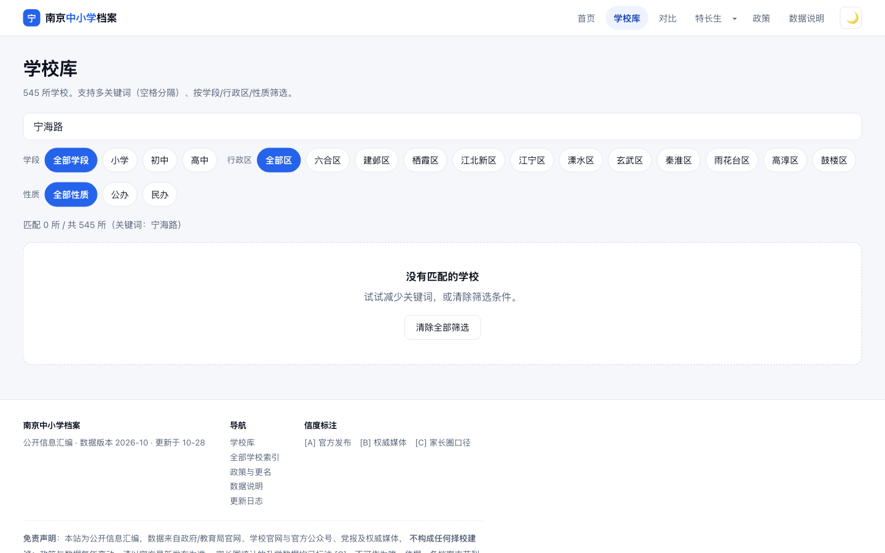
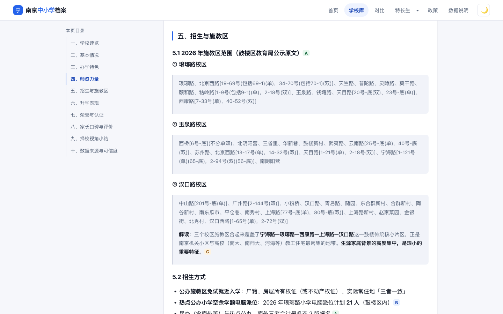
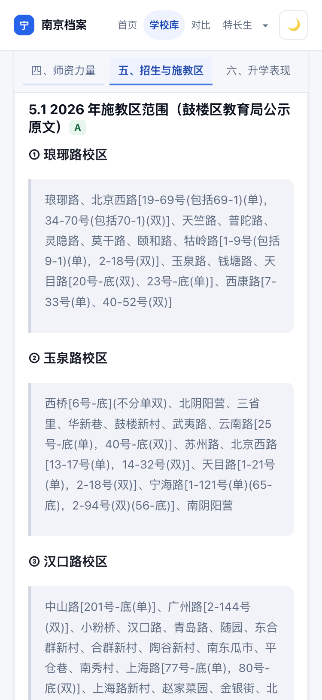
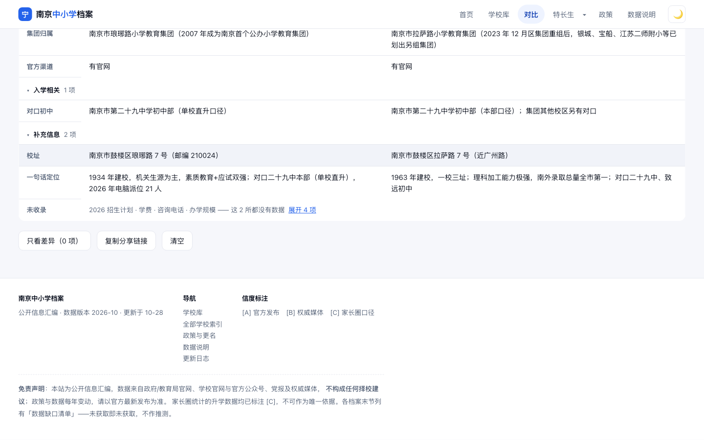

一句话结论
这个站点的内容质量与诚实度是稀缺资产——信度 A/B/C 分级、数据缺口清单、"只标不同不标更好"的克制，
在择校信息领域几乎看不到第二家。但它的组织方式是按"学校"来的，而家长的思考方式是按"我家地址"和"我该做什么"来的。
结果就是：答案在页面上，但家长拿不到。
一位住宁海路的家长搜索「宁海路」会得到 0 条结果，而他想要的那份施教区原文，正躺在琅琊路小学详情页第 5.1 节里，
以「北京西路[19-69号(包括69-1)(单)，34-70号(包括70-1)(双)]」的形式存在着。
因此本报告把两个 P0 都放在「信息组织」层，而不是视觉层。视觉层问题真实存在（移动端 13.5px 正文），但它不是流失的主因。
走查设定：四种家长，八条路径
不按页面走，按人走。每个角色都带着一个真实待办任务进入站点，观察能否在合理步数内完成任务。
| 家长画像 | 任务 | 设备与情境 | 结果 |
|---|
张女士
38 岁 · 鼓楼区
孩子中班 | 我家这套房能上哪所小学？值不值得买 | 手机，地铁上 10 分钟碎片时间 | 失败 |
李先生
42 岁 · 玄武区
孩子六年级 | 玄外摇号值不值得赌，保底公办是哪所 | iPad，晚上和配偶一起看 | 部分完成 |
王女士
36 岁 · 江宁区
孩子初三 590 分 | 这个分数能上哪些高中，三年趋势如何 | 手机，招生咨询会现场站着查 | 部分完成 |
刘先生
33 岁 · 浦口 · 新南京人
落户 2 年 | 浦口有哪些好学校，「拉力琅」是什么 | 电脑，第一次听说这些词 | 部分完成 |
P0 · 阻断级：核心问题无法被回答
这两条的共同点是：数据在库里，路走不通。它们不属于"做得不够好"，属于"任务根本完不成"。
P0-1
搜地址搜不到学校——而施教区数据就在站内
复现路径
首页 → 搜索框输入「宁海路」→ 回车 → 匹配 0 所 / 共 545 所
同样输入「龙江小区」→ 匹配 0 所
对照：打开「南京市琅琊路小学」→ 五、招生与施教区 → 玉泉路校区范围里明确写有「宁海路[1-121号(单)…]」
家长影响
张女士这类家长的问题从来不是"琅琊路小学怎么样"，而是"我家在不在它范围内"。
她不知道要先猜一所学校名字才能看到施教区，也不知道该猜哪一所。搜索 0 结果后，她得到的信息是"这个站没有我要的东西"，
而事实恰恰相反——站里有 340 份小学档案，每一份都含完整施教区原文。第一分钟内发生的这次失败，基本决定了不再回来。
改进建议
- 把施教区变成可检索字段：构建时从 5.1 节抽取路名/小区名进 schools-data.js 的 streets 数组，搜索时一并匹配。这是纯前端改动，不需要后端。
- 首页给第二入口：搜索框下方「常搜」之外，加一个「按小区/路段查施教区」的独立入口，明确告诉家长这条路走得通。
- 命中时给上下文：搜"宁海路"时结果卡不只要显示校名，还要显示"该校施教区包含：宁海路 1-121 号（单）"，让家长一眼确认而不是再点进去找。

搜索「宁海路」的实际结果：匹配 0 所。空态给的建议是"试试减少关键词"——但家长只输了一个词。
P0-2
施教区以公文原文堆放，家长无法判断"我在不在里面"
位置
详情页 5.1「2026 年施教区范围」（桌面与移动端同问题）
复现路径
学校库 → 南京市琅琊路小学 → 五、招生与施教区 → 5.1
观察：三个校区各一段 200 字左右的灰底块，内容形如「北京西路[19-69号(包括69-1)(单)，34-70号(包括70-1)(双)]、天竺路、普陀路、灵隐路…」
家长影响
这是全站标注信度最高（[A] 教育局公示原文）却最不可用的一块内容。
家长要在三段密集文本里完成三件事：定位到自己那条路、比对号段、判断单双号——还要先弄清自家属于哪个校区。
三个人工核对步骤，每一步都可能出错。误判的代价是几十万到几百万的购房决策。当家长发现自己读不懂时，他的结论不是"我再仔细看看"，而是"这站写得太专业，我看不懂"，然后离开。
改进建议
- 一次只看一个校区：三个校区改成可切换的 tab / 单选，而不是三段并排堆叠。
- 加一个"查我在不在"输入框：家长输入路名+门牌号，前端做字符串与号段匹配，直接返回"在 / 不在 / 需人工确认"。零后端、纯 JS，一次改动就消化掉本站最大的认知负担。
- 版式降负：每条路名单独一行、按拼音排序、长括号换行缩进；顶部先给一句人话摘要（原文中已有："覆盖宁海路—琅琊路—西康路一带"），把结论提到前面。
- 保留原文：结构化呈现之外，保留可展开的"查看教育局公示原文"，兼顾可信度。

桌面端施教区：三段灰底块，括号套括号。信度标 A，但可读性接近零。

同样的内容在 375px 上：13.5px 字号 + 密集括号，需要逐字比对的门牌号被折成 9 行。这是最需要"结构化"的场景，却用了最"原文"的呈现。
P1 · 严重级：明显增加成本，或制造误判
这些不是死路，但每一步都在劝退。多数流失发生在这一层。
P1-3
移动端正文 13.5px，比桌面还小
复现路径
375×812 打开任一详情页 → 实测正文 13.5px / 行高 23.6px（桌面为 14.5px / 25.4px）
受影响的还包括表格单元格、施教区块、信度标注（12.5px / 20px 见方）
家长影响
目标用户是 35–45 岁家长，正处于老花开始显现的阶段，且使用场景多为碎片时间、通勤路上、光线不稳。
13.5px 中文意味着每行约 24 字、字重偏细，长文阅读疲劳度显著上升。更关键的是：手机上恰好是最需要精读的场景（对比门牌号、核对投档线），
而这里恰恰是全站字号最小的地方。桌面 14.5px 已经偏小，移动端反而再缩一档，方向反了。
改进建议
- 移动端正文提到 15–16px，行高 1.7；表格卡片化后字号同步提升，不要因为是表格就降级。
- 信度标注（A/B/C）至少 12px 并加 2px 内边距，现在 12.5px 挤在 20px 方块里，A 和 C 在手机上一眼分不清。
- 加一个字号开关（标准 / 大），对这类"给长辈看的资料站"性价比极高。
P1-4
搜索只覆盖"一句话摘要"，任务词搜出的是随机子集
复现路径
学校库 → 依次搜索下列词，与档案实际覆盖对比：
「学费」→ 返回 12 所，实际 376 份档案含学费数据
「投档线」→ 返回 14 所，实际 39 份高中档案含投档线
「施教区」→ 返回 189 所，实际 340 份小学档案全部含施教区章节
「指标生」→ 返回 8 所，实际远多于此
家长影响
李先生想横向看"哪些民办初中有学费"，得到 12 所，他会认为全南京只有 12 所学校收学费，
并在这个残缺的集合上做排除法。不完整的搜索结果比没有结果更危险——零结果会让人重新提问，残缺结果会让人得出错误结论。
问题根源是搜索索引只取了卡片摘要（校名/简称/梯队/一句话），正文里的结构化事实没有进入索引。
改进建议
- 把"属性查询"从关键词里拿出来：学费、投档线、摇号计划、对口初中、住宿、班额这些是筛选维度，做成筛选器比做成关键词可靠得多。
- 若保留关键词，索引必须覆盖正文字段，并在结果里分组：「校名匹配 3 所 / 内容提及 42 所」，让家长知道完整集的边界。
- 结果区常驻一行"共 545 所中，有学费数据 376 所"，把覆盖率显性化，避免以偏概全。
P1-5
详情页零交叉链接，读完一所就断路
复现路径
打开琅琊路小学 → 六、升学表现 →「对口初中：南京市第二十九中学初中部」
实测该文本不可点击；页面内 指向其他学校的内链 = 0；页面内 输入框 = 0（无站内搜索）；无上一所/下一所
家长影响
家长的真实决策链是一条链：小学 → 对口初中 → 该校中考表现 → 目标高中 → 投档线。
站点把这条链上的每一环都写清楚了，却不允许沿链走。家长想看的"对口初中怎么样"，答案就在隔壁页面，但必须退回学校库重新搜一次。
每一次想跳转却没有链接，都是一次把用户推回搜索引擎的机会——而搜索引擎那边，是站方自己反复警示的"臆造数据"聚合站。
改进建议
- 正文里的校名全部转内链：对口初中、集团校、直升校、常对比校，构建时按 index.json 做一次名称匹配替换即可。
- 页尾加"接着看"区块：对口初中 / 同区同梯队 3 所 / 常一起对比的学校，给三条明确的下一步。
- 导航常驻搜索：详情页也保留搜索入口，不要让"换一所学校看"变成两次返回。
P1-6
对比页把两所名小放一起，结果全是"未收录"
复现路径
对比页 → 依次添加「南京市琅琊路小学」「南京市拉萨路小学」
实测：全表 14 行 / 4 个分组；末行显示「未收录：2026 招生计划 · 学费 · 办学规模 —— 这 2 所都没有数据 展开 4 项」；
核心按钮「只看差异」显示 0 项
家长影响
这是全站最有差异化的功能，却也是承诺与交付落差最大的一处。两所鼓楼"四大名小"，家长最想对比的是摇号人数、
南外录取、对口初中中考表现、班额——这些恰恰都不在表里，因为对比只吃了 index.json 的摘要字段，而详情页每校有 8000+ 字的实质内容。
页面标语写着"只标「不同」不标「更好」"，家长点下去看到"只看差异（0 项）"，得到的信号是"这两所没区别"——一个由数据缺失造成的假结论。
改进建议
- 对比维度改从详情页结构化抽取：摇号计划、对口初中、四星率、班额、学费、招生计划，这些字段详情页都有，只是没进索引。
- 差异项要看得见：现在差异没有任何视觉标注，靠家长逐行比对。用底色 + 左侧色条区分，并支持"只看差异"真实生效。
- 缺数据要说人话：「这 2 所都没有数据」应改为「以下 4 项本站未获取，不代表两校相同」，避免把"没查到"读成"没差别"。
- 表头吸顶，长表滚动时不丢列名。

对比结果底部：「未收录：2026 招生计划 · 学费 · 办学规模」。最有决策价值的三个维度整块缺失。
P1-7
首页 4 条政策 ≠ 政策页 5 条，且漏掉的正是最要紧的两条
位置
首页「2026 年有哪些变化」区块 / 首页统计条「4 项 2026 政策变化」 / /policy.html
复现路径
首页 → 滚到「2026 年有哪些变化」，列出 4 条：落户 / 普高扩招 / 浦口并轨 / 多校更名
对照 /policy.html「2026 年招生政策要点」表格：5 行，多出「取消学区房年限限制」「长幼随学试点」
统计条写「4 项」，政策页实为 5 项
家长影响
被首页漏掉的两条，恰好是对决策影响最大的：「取消学区房年限限制」直接改变购房判断，
「长幼随学」是二孩家庭的刚需。首页用"多所学校更名"占掉了一个政策位——更名是检索便利问题，不是政策利好，优先级错配。
同时"4 项"与政策页 5 条对不上：对一个以"准确性"为核心卖点的站，首页数字与内页不一致是最伤信任的一类瑕疵。
改进建议
- 数字不要手写：首页「N 项」与列表从 content/pages/policy.md 同源派生，构建时自动计数，杜绝漂移。
- 首页政策位优先放"影响决策"的条目，更名归到「检索提示」而不是政策变化。
- 每条后面加一句"对你意味着什么"（如：年限限制取消 → 现在买房当年就能入学），把公文翻译成人话。
P1-8
没有"浦口区"：27 所学校被整体归入江北新区
位置
首页「11 个区」卡片、学校库行政区筛选、所有卡片标签
复现路径
首页区卡：六合 / 建邺 / 栖霞 / 江北新区 / 江宁 / 溧水 / 玄武 / 秦淮 / 雨花台 / 高淳 / 鼓楼 —— 共 11 个，无浦口区
搜「浦口」→ 27 所，但每张卡标签都是「江北新区」，其中包含「南京市浦口区永宁小学」「南京市浦口区汤泉小学」
对照 /policy.html：明确写着「浦口区与江北新区招生并轨」——并轨不等于合并为一个区
家长影响
刘先生是浦口人，他找的是"我们区"。筛选器里没有浦口，首页 11 个区也没有，他会得出"这个站没做浦口"的判断——而实际上有 27 所。
即便搜到了，卡片上"浦口区永宁小学 · 江北新区"的标签打架，会让他怀疑数据准确性。
更麻烦的是内部不一致：政策页承认浦口区是独立主体，结构上却把它抹掉了。
改进建议
- 恢复「浦口区」作为行政区一级，江北新区作为独立的片区维度（区县 × 片区二级结构），两者都能筛。
- 过渡期至少加别名：「江北新区（含浦口）」并让"浦口"能筛出结果。
- 与政策页「并轨」表述对齐，在筛选器上注明并轨对招生范围的实际影响。
P1-9
手机导航里没有"政策"，但有"特长生"
复现路径
375×812 打开首页 → 导航可见项：首页 / 学校库 / 对比 / 特长生▾ / 主题切换
实测「政策」「数据说明」渲染宽度为 0（仅在页脚可达）
家长影响
政策是家长每年 5 月的头等大事，在手机上却只能滚到页脚才能找到；而「特长生」是初三那年 5 月才用得上、
覆盖人群极窄的通道，却稳稳占着移动端一个位置。导航位是按开发顺序排的，不是按家长任务的紧急度排的。
改进建议
- 移动端一级导航改为：首页 / 学校库 / 政策 / 更多▾，把「对比」「特长生」「数据说明」收进「更多」。
- 顺手修触控目标：现导航项高 22px、主题按钮 34px，均低于 44px 建议值（实测 30 个可点元素中 29 个不足 44px）。
P2 · 改进级：影响效率、观感与信任
单条不致命，但累积起来决定"这站是资料库还是决策工具"。
P2-10
最显眼的按钮把家长送出站外
位置
详情页头部「访问学校官网 ↗」（蓝色实心，页面视觉权重最高的元素）
家长影响
家长进详情页的核心动作是"看施教区 / 看投档线"，但最强按钮指向站外官网。
官网一打开，多半是陈旧的新闻列表或干脆打不开（站方自己标注了 31 所不可访问）。视觉权重给了次要动作，用户就被引导做了次要的事。
改进建议
- 主按钮改为「看施教区」「看投档线」（锚点跳转，按学段变化），官网降级为文字链接 + 外链图标。
- "链接核验于 2026-10-22"这类溯源信息保留，但移到次级位置——它是信任支撑，不是行动召唤。
P2-11
首屏看不到关键数字：投档线要滚 4 屏
家长影响
王女士在招生咨询会现场站着查九中，她需要 5 秒内看到"投档线 / 位次 / 招生计划"。实际要滚过"一句话定位 + 官网按钮 + 目录 + 速览表"，
翻到第四节才行。头部现在被官网按钮、微信号、核验日期占满，信息预算给错了对象。
改进建议
- 头部加 3 个数字芯片，按学段切换：小学→对口初中 / 摇号人数 / 班额；初中→四星率 / 摇号计划 / 学费；高中→投档线 / 位次 / 招生计划。
- 芯片可点，直达对应小节。
P2-12
545 张卡片一次铺开，无排序、无分页
复现路径
直接打开学校库 → 实测 545 张卡片全部渲染，页面高度 41,353px（约 46 屏）；
可用的筛选只有 学段 / 行政区 / 性质，无排序控件（无按梯队、按拼音、按热度）
家长影响
"我想看看鼓楼有哪些好小学"这个任务，默认态下没有路径——必须先想到"去筛鼓楼"，再自己扫 27 张卡。
对不知道该选哪所的家长（大多数），列表没有默认叙事（梯队分层 / 就近），只是按文件顺序排。
改进建议
- 默认按区 × 梯队分组，而不是平铺；给"我不确定选哪所"的人一条明确路径。
- 加排序：梯队 / 拼音 / 建校年份；长列表分页或"加载更多"。
- 移动端首屏提高信息效率：卡片现在 4 个标签 + 梯队 + 3 行摘要，一屏只放得下 1.8 张。
P2-13
全站零图形：数据密度极高，可视化程度为零
位置
全站（实测 img = 0、canvas/svg = 0，除 logo 外无任何图形）
家长影响
高中详情页 17 张表格、8000+ 字，投档线逐年、招生计划逐年、升学率逐年——全是表格。
家长要做"这校三年是涨是跌"的判断，得自己把三行数字读成趋势。信息密度上去了，感知效率没上去；
观感上也就停在"资料库"，进不到"决策工具"。
改进建议
- 优先做三个最容易见效的图：高中投档线 3 年折线、民办摇号中签率横条、同区梯队分布条形。
- 用内联 SVG 手写，不引入图表库，符合项目"零框架零运行时依赖"的约束。
- 施教区若做结构化，配一张示意图（不接地图服务，避免合规问题），比文字强十倍。
P2-14
首页「常搜」用行话，新南京人看不懂
位置
首页搜索框下方「常搜：拉力琅 / 玄外 / 二十九中 / 鼓楼 / 民办」
家长影响
「拉力琅」是南京家长圈的内部简称（拉萨路 / 力学 / 琅琊路），本地老家长秒懂，新落户家庭完全不知所云。
刘先生看到的是一个陌生词 + 四个似懂非懂的词，而他恰恰是最需要引导的那部分用户。行话是社群身份的标志，但放在入口处就变成了门槛。
改进建议
- 「拉力琅」加可点提示：悬停/点击显示"拉萨路 · 力学 · 琅琊路，鼓楼四大名小之三"。
- 常搜换成人话任务词：「鼓楼区小学」「民办初中摇号」「中考 590 分能上哪」——顺便覆盖 P1-4 的策略词需求。
- 加一个「新南京人入门」的短页：简称对照 + 学区基本概念，成本很低，对留存的帮助很大。
P2-15
空态建议文不对题，也没有近似纠错
家长影响
搜「宁海路」时提示"试试减少关键词，或清除筛选条件"——家长只输了一个词，也没有筛选，这条建议完全对不上。
同时没有任何"你是不是想找 宁海中学"的近似提示，也没有说明"施教区暂不支持搜索"（这句话能救回 P0-1 掉的一部分用户）。
空态是用户最愿意被引导的一刻，现在却给了一句无用建议。
改进建议
- 区分空态原因：关键词过长 / 筛选过窄 / 疑似地址输入，分别给不同文案与出口。
- 疑似地址输入时直接引导：「你输的像是路名——本站暂不支持按地址搜，可以试试这份施教区说明 / 或按区浏览」。
- 加编辑距离纠错与同音提示（校名短，成本极低）。
归因：问题不在视觉层，在下面两层
用五层模型拆一遍，能看到 15 条问题不是散落的，而是同一个根源在不同层的投影。
战略层产品目标
站点假设用户的问题是"这所学校怎么样"，实际家长的问题是"我家孩子该去哪、我现在该做什么"。
这两个问题需要不同的入口（地址 / 时间轴），而站点只有一个入口（校名）。P0-1、P1-8 的根在这里。
范围层功能与内容
内容覆盖极完整（545 所、240 万字符、信度体系），但只有"阅读"一种消费方式，缺少"判断"工具：
没有地址查询、没有招生日历、没有分数→学校反查、属性筛选。P1-4、P1-6、P2-13 的根在这里。
结构层信息架构
"学段 → 区 → 学校"的层级是对的，但叶子节点之间没有横向连接（无内链、无相似推荐、无下一步），
用户的探索只能靠回退。P1-5 的根在这里。
框架层界面与导航
桌面端结构清晰（面包屑、目录、锚点导航都在，语义标签规范），问题集中在移动端：导航取舍错位、筛选状态不可见。P1-9、P2-12 在这一层。
表现层视觉设计
这是全站完成度最高的一层。设计令牌统一、深浅色都成立（深色实测 #0b0f16 / #e6e9f0，对比度合格）、
375px 全站零横向溢出（scrollWidth = 375 = innerWidth，逐页验过）。
唯一的硬伤是移动端 13.5px 正文字号（P1-3），以及信息层级把权重给了外链按钮（P2-10）。
该保留的：站点的三个稀缺资产
- 信度 A/B/C 分级 + 每份档案末尾的数据缺口清单。「未获取即未获取，不作推测」——这在择校信息领域是罕见的诚实，也是这个站最该被放大的差异点，建议在首屏就讲出来。
- 对比页"只标不同不标更好"的立场克制。方向完全正确，只是数据没跟上（P1-6），补齐维度后会成为核心留存功能。
- 特长生页是全站写得最好的内容页：先说"小学阶段学编程不会带来小升初加分"打消误解，再给四类通道与控制线。
这种"先破除误解、再给事实"的结构，应该复制到所有高频误解点（学区房、摇号、指标生）。
改进路线：先修路，再修饰
按"改动成本 ÷ 体验收益"排序。第一阶段全是纯前端或构建期改动，不涉及架构调整。
第一阶段低成本 · 立刻见效
- 施教区结构化 + 地址查询（消化 P0-1、P0-2 两条）：抽取路名进索引，加"查我在不在"输入框。这是全站唯一能把"0 结果"变成"我找到了"的改动。
- 移动端字号 13.5 → 15.5px，信度标记放大到 12px（P1-3）。一行 CSS。
- 详情页校名转内链 + 页尾"接着看"（P1-5）。构建期一次匹配。
- 首页"4 项"改自动计数，补上"长幼随学""取消年限"（P1-7）。
- 移动端导航补"政策"（P1-9）。
第二阶段中等成本 · 补能力
- 属性筛选器替代关键词查询：学费 / 摇号 / 住宿 / 班额 / 是否九年一贯制（P1-4）。
- 对比维度扩充到详情页真实字段，差异高亮 + 表头吸顶（P1-6）。
- 恢复浦口区 + 片区二级结构（P1-8）。这一项涉及数据重新归类，需与政策页表述同步。
- 详情页数字芯片（P2-11）与三个基础图表（P2-13）。
第三阶段结构性 · 换入口
- 招生时间轴：把散落在 545 份档案 5.3 节的"报名时间节点"聚合成一张"我家今年该做什么"的日历。这是当前完全缺失、但对家长价值最高的功能。
- 分数 → 学校反查：输入中考分，输出可报学校区间（高中档案已有 39 份投档线数据）。
- 新南京人入门页：简称对照 + 学区概念（P2-14）。
怎么验证改对了
站点目前无后端、无埋点，建议先用最小成本建立可观测性，否则改完只能靠感觉判断。
| HEART 维度 | 指标 | 怎么测（零后端方案） |
|---|
| 任务成功 | 搜索后产生详情页点击的比例 | 前端记录"搜索 → 点击结果"事件，用 navigator.sendBeacon 打到一个轻量计数端点，或先只做本地采样 |
| 任务成功 | 零结果搜索的占比与 TOP 关键词 | 同上，专门记录 resultCount = 0 的查询词——这会直接告出家长在用什么词思考 |
| 参与度 | 单次会话浏览详情页数 | 无内链时该值会卡在 1.2 左右；内链上线后应显著上升，是最灵敏的验证指标 |
| 留存 | 招生季（4–6 月）7 日回访率 | localStorage 打一个首访/回访标记即可粗测 |
| 满意度 | 详情页底部一个"这份档案对你有用吗" | 两个按钮，一次点击。比 NPS 问卷的回收率高一个量级 |
复现清单
供开发同学逐条复验。所有数值均为 2026-10-28 在 site/ 构建产物上的实测值。
| 编号 | 复现操作 | 实测结果 |
|---|
| P0-1 | 学校库搜「宁海路」/「龙江小区」 | 匹配 0 所；而琅琊路小学 5.1 节含该路段 |
| P0-2 | 琅琊路小学 → 五、招生与施教区 | 3 段公文原文，单段约 200 字，号段+单双号嵌套 |
| P1-3 | 375px 详情页读 computed font-size | 正文/表格/引用块均 13.5px；桌面 14.5px |
| P1-4 | 搜「学费」「投档线」「施教区」 | 12 / 14 / 189 所；档案实际覆盖 376 / 39 / 340 份 |
| P1-5 | 详情页统计内链与输入框 | 指向其他学校的内链 0；input 数量 0 |
| P1-6 | 对比页加琅琊路 + 拉萨路 | 14 行 / 4 组；未收录 4 项；「只看差异」显示 0 项 |
| P1-7 | 首页政策块 vs /policy.html | 首页 4 条（含"更名"）；政策页 5 条（含"长幼随学""取消年限"） |
| P1-8 | 首页区卡 / 筛选器 / 搜「浦口」 | 11 个区无浦口；27 所浦口校标「江北新区」 |
| P1-9 | 375px 导航项渲染宽度 | 「政策」「数据说明」宽度 0；页脚可达 |
| P2-10 | 详情页头部按钮权重 | 唯一实心按钮为「访问学校官网 ↗」 |
| P2-11 | 九中详情首屏 | 投档线位于第四节，首屏不可见 |
| P2-12 | 学校库默认态 | 545 卡片 / 页高 41,353px / 无排序控件 |
| P2-13 | 统计全站图形元素 | img = 0、canvas/svg = 0 |
| P2-14 | 首页「常搜」 | 「拉力琅」无任何解释 |
| P2-15 | 搜「宁海路」空态文案 | 「试试减少关键词，或清除筛选条件」（用户未用多词/无筛选） |
| 通过项 | 375px 逐页 scrollWidth | 首页/学校库/详情/对比 均 375 = innerWidth，零横向溢出 |
| 通过项 | 深色模式对比度 | body #0b0f16 / 文本 #e6e9f0，主要文本达标 |